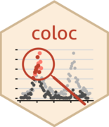

 The coloc package can be used to perform genetic colocalisation analysis of two potentially related phenotypes, to ask whether they share common genetic causal variant(s) in a given region.
Most of the questions I get relate to misunderstanding the assumptions behind coloc (dense genotypes across a single genomic region) and/or the data structures used. Please read vignette("a02_data",package="coloc") before starting an issue.
version 6
This update (version 6) adds the ability to use variant-specific priors in coloc. See
- Pullin, J., Wallace, C. (2024+). Variant-specific priors in colocalisation analysis. bioRxiv 2024.08.21.608957. https://doi.org/10.1101/2024.08.21.608957
for a description of the implementation and a comparison of different sources of prior inforamtion. If you use variant-specific priors in coloc please cite this paper.
More detail is also available in the vignette a07_variant_specific_priors.html accessible by
vignette("a07-variant_specific_priors",package="coloc")version 5
This update (version 5) supercedes previously published version 4 by introducing use of the SuSiE approach to deal with multiple causal variants rather than conditioning or masking. See
- Wang, G., Sarkar, A., Carbonetto, P., & Stephens, M. (2020). A simple new approach to variable selection in regression, with application to genetic fine mapping. Journal of the Royal Statistical Society: Series B (Statistical Methodology). https://doi.org/10.1111/rssb.12388
for the full SuSiE paper and
- Wallace (2021). A more accurate method for colocalisation analysis allowing for multiple causal variants. PLoS Genetics. https://journals.plos.org/plosgenetics/article?id=10.1371/journal.pgen.1009440
for a description of its use in coloc.
To install from R, do
if(!require("remotes"))
install.packages("remotes") # if necessary
library(remotes)
install_github("chr1swallace/coloc@main",build_vignettes=TRUE)Note that in all simulations, susie outperforms the earlier conditioning approach, so is recommended. However, it is also new code, so please consider the code “beta” and let me know of any issues that arise - they may be a bug on my part. If you want to use it, the function you want to look at is coloc.susie. It can take raw datasets, but the time consuming part is running SuSiE. coloc runs SuSiE and saves a little extra information using the runsusie function before running an adapted colocalisation on the results. So please look at the docs for runsusie too. I found a helpful recipe is 1. Run runsusie on dataset 1, storing the results 2. Run runsusie on dataset 2, storing the results 3. Run coloc.susie on the two outputs from above
More detail is available in the vignette a06_SuSiE.html accessible by
vignette("a06_SuSiE",package="coloc")Background reading
For usage, please see the vignette at https://chr1swallace.github.io/coloc
Key previous references are:
original propostion of proportional colocalisation Plagnol et al (2009)
proportional colocalisation with type 1 error rate control Wallace et al (2013)
colocalisation by enumerating all the possible causal SNP configurations between two traits, assuming at most one causal variant per trait Giambartolomei et al (2013)
Thoughts about priors in coloc are described in Wallace C (2020) Eliciting priors and relaxing the single causal variant assumption in colocalisation analyses. PLOS Genetics 16(4): e1008720
Frequently Asked Questions
see FAQ
Notes to self
to generate website: https://chr1swallace.github.io/coloc/
Rscript -e "pkgdown::build_site()"